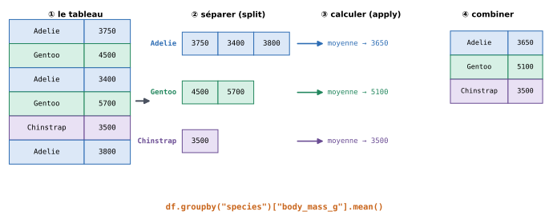

12. Préparer et résumer ses données avec pandas#
Objectifs du chapitre
À la fin de ce chapitre, vous saurez :
créer, transformer, renommer et supprimer des colonnes ;
repérer et traiter les valeurs manquantes ;
manipuler des colonnes de texte et de dates ;
calculer des statistiques par groupe avec
groupbyet des tableaux croisés ;fusionner deux tableaux et enregistrer le résultat dans un fichier.
Prérequis : chapitre 11. Durée indicative : 2h30.
Dans la réalité, les données sont rarement prêtes à l’emploi : il faut créer de nouvelles variables, corriger des types, gérer des valeurs manquantes… avant de pouvoir calculer des résumés. On dit souvent que cette phase de préparation occupe la plus grande partie du temps d’une analyse de données !
import pandas as pd
import numpy as np
df = pd.read_csv("donnees/penguins.csv")
Différences avec R et SAS
Opération |
R ( |
SAS |
|
|---|---|---|---|
Nouvelle colonne |
|
étape DATA : |
|
Condition |
|
|
|
Recoder |
|
|
|
Découper en classes |
|
|
|
Renommer |
|
|
|
Supprimer une colonne |
|
|
|
Retirer les manquants |
|
|
|
Résumer par groupe |
|
|
|
Tableau croisé |
|
|
|
Jointure |
|
|
|
Empiler |
|
|
|
Format large |
|
|
|
Exporter |
|
|
|
Contrairement à SAS (MERGE ... BY), il n’est pas nécessaire de trier les tables avant une jointure.
Et contrairement à l’opérateur |> (ou %>%) de R, on enchaîne les opérations pandas avec des points : df.dropna().groupby("g")["x"].mean().round(1).
12.1. Créer et modifier des colonnes#
12.1.1. Calculs sur des colonnes#
Pour créer une nouvelle colonne, il suffit de lui affecter une valeur, comme pour une nouvelle clé de dictionnaire.
Les calculs entre colonnes se font élément par élément, comme avec numpy, sans boucle :
df["body_mass_kg"] = df["body_mass_g"] / 1000
df["bill_ratio"] = df["bill_length_mm"] / df["bill_depth_mm"]
df[["body_mass_g", "body_mass_kg", "bill_ratio"]].head(3)
| body_mass_g | body_mass_kg | bill_ratio | |
|---|---|---|---|
| 0 | 3750.0 | 3.75 | 2.090909 |
| 1 | 3800.0 | 3.80 | 2.270115 |
| 2 | 3250.0 | 3.25 | 2.238889 |
Si la colonne existe déjà, son contenu est remplacé.
12.1.2. Recoder des valeurs : map et replace#
Pour remplacer des valeurs par d’autres (traduire des modalités, regrouper des catégories…), on utilise la méthode map avec un dictionnaire de correspondance :
traduction = {"Adelie": "Adélie", "Chinstrap": "à jugulaire", "Gentoo": "papou"}
df["espece"] = df["species"].map(traduction)
df[["species", "espece"]].sample(4, random_state=0)
| species | espece | |
|---|---|---|
| 141 | Adelie | Adélie |
| 6 | Adelie | Adélie |
| 60 | Adelie | Adélie |
| 249 | Gentoo | papou |
Attention : avec map, une valeur absente du dictionnaire devient une valeur manquante. Pour ne remplacer que certaines valeurs et laisser les autres intactes, utilisez plutôt replace avec le même dictionnaire.
12.1.3. Découper en classes : pd.cut#
Pour transformer une variable numérique en catégories (des tranches d’âge, des classes de masse…), on utilise pd.cut en précisant les bornes des classes :
df["gabarit"] = pd.cut(df["body_mass_g"], bins=[0, 3500, 4500, 7000],
labels=["petit", "moyen", "grand"])
df["gabarit"].value_counts()
gabarit
moyen 149
grand 115
petit 78
Name: count, dtype: int64
Par défaut, chaque intervalle est ouvert à gauche et fermé à droite : une masse de 3500 g est classée « petit ».
12.1.4. Appliquer une fonction : apply#
Pour des transformations plus complexes, on peut appliquer à chaque valeur d’une colonne une fonction que l’on a écrite soi-même, avec apply :
def categorie_bec(longueur):
if longueur < 40:
return "court"
elif longueur < 48:
return "moyen"
return "long"
df["bec"] = df["bill_length_mm"].apply(categorie_bec)
df["bec"].value_counts()
bec
moyen 148
court 100
long 96
Name: count, dtype: int64
Bonne pratique
apply est très souple mais plus lent que les opérations vectorisées (+, /, map, pd.cut…), car il appelle la fonction Python une fois par ligne.
Utilisez-le seulement quand il n’existe pas d’outil plus direct.
12.1.5. Renommer et supprimer des colonnes#
df = df.rename(columns={"bill_length_mm": "bec_long", "bill_depth_mm": "bec_epais"})
df = df.drop(columns=["body_mass_kg", "bill_ratio", "bec"])
df.columns
Index(['species', 'island', 'bec_long', 'bec_epais',
'flipper_length_mm', 'body_mass_g', 'sex', 'espece',
'gabarit'],
dtype='str')
Comme sort_values, les méthodes rename et drop retournent un nouveau DataFrame : pour conserver le résultat, on le réaffecte à df.
12.2. Les valeurs manquantes#
Les valeurs manquantes (NaN) sont omniprésentes dans les données réelles : capteur en panne, question sans réponse, information inconnue…
Il faut toujours commencer par les compter :
df.isna().sum()
species 0
island 0
bec_long 2
bec_epais 2
flipper_length_mm 2
body_mass_g 2
sex 11
espece 0
gabarit 2
dtype: int64
isna() produit un tableau de booléens (True là où la valeur manque), et sum() compte les True dans chaque colonne.
Plusieurs stratégies sont possibles :
supprimer les lignes concernées, avec
dropna(éventuellement en ne regardant que certaines colonnes grâce à l’argumentsubset) ;remplacer les valeurs manquantes par une valeur choisie, avec
fillna(une valeur fixe, la moyenne ou la médiane de la colonne…).
complet = df.dropna(subset=["sex"]) # on retire les 11 manchots de sexe inconnu
print(df.shape, complet.shape)
df["sex"] = df["sex"].fillna("inconnu")
df["sex"].value_counts()
(344, 9) (333, 9)
sex
MALE 168
FEMALE 165
inconnu 11
Name: count, dtype: int64
Attention
Aucune stratégie n’est neutre : supprimer des lignes réduit (et peut biaiser) l’échantillon, et remplacer par la moyenne invente des valeurs. Le choix dépend de la question posée. Dans tous les cas, notez ce que vous avez fait, et vérifiez combien de lignes sont concernées.
Testez-vous
Après df2 = df.dropna(), combien de lignes reste-t-il si une seule colonne contient des valeurs manquantes, sur 10 lignes ? Et si deux colonnes contiennent chacune 2 valeurs manquantes, sur des lignes différentes ?
Réponse
Sans argument, dropna() supprime toute ligne qui contient au moins une valeur manquante, dans n’importe quelle colonne.
Dans le premier cas, il reste 10 moins le nombre de valeurs manquantes de cette colonne. Dans le second, 4 lignes sont supprimées : il en reste 6.
C’est pourquoi on précise souvent subset=[...] pour ne tenir compte que des colonnes utiles à l’analyse.
12.3. Texte et dates#
12.3.1. Les colonnes de texte : l’accesseur .str#
Les méthodes des chaînes de caractères (lower, upper, replace, startswith…) s’appliquent à toute une colonne de texte grâce à l’accesseur .str :
df["sex"] = df["sex"].str.lower()
print(df["sex"].unique())
print(df["island"].str.upper().head(3))
print(df[df["island"].str.startswith("T")].shape)
<StringArray>
['male', 'female', 'inconnu']
Length: 3, dtype: str
0 TORGERSEN
1 TORGERSEN
2 TORGERSEN
Name: island, dtype: str
(52, 9)
La méthode .str.contains("motif") est particulièrement utile pour filtrer les lignes dont un texte contient un mot donné.
12.3.2. Les dates : pd.to_datetime et l’accesseur .dt#
Le fichier donnees/flights.csv contient le nombre mensuel de passagers (en milliers) d’une compagnie aérienne entre 1949 et 1960, un grand classique de l’étude des séries temporelles :
vols = pd.read_csv("donnees/flights.csv")
vols.head(3)
| year | month | passengers | |
|---|---|---|---|
| 0 | 1949 | January | 112 |
| 1 | 1949 | February | 118 |
| 2 | 1949 | March | 132 |
Pour exploiter les dates, il faut les convertir dans le type date de pandas, avec pd.to_datetime.
Ici, on construit d’abord une chaîne "1949-January", puis on indique son format, à l’aide de codes : %Y pour l’année sur 4 chiffres, %B pour le nom du mois (en anglais) :
vols["date"] = pd.to_datetime(vols["year"].astype(str) + "-" + vols["month"], format="%Y-%B")
vols.dtypes
year int64
month str
passengers int64
date datetime64[us]
dtype: object
Formats de date courants
pd.to_datetime("2024-10-10"): le format international (année-mois-jour) est reconnu automatiquement ;pour des dates à la française (
"10/10/2024"), précisez le format :pd.to_datetime(colonne, format="%d/%m/%Y")(ou l’argumentdayfirst=True) ;%djour,%mmois (numéro),%Yannée sur 4 chiffres,%Hheure,%Mminutes.
Une fois convertie, une colonne de dates offre l’accesseur .dt, qui donne accès à l’année, au mois, au jour de la semaine… et on peut comparer ou soustraire des dates :
print(vols["date"].dt.year.head(3))
recents = vols[vols["date"] >= "1960-01-01"]
print(len(recents), "mois en 1960")
print(vols["date"].max() - vols["date"].min())
0 1949
1 1949
2 1949
Name: date, dtype: int32
12 mois en 1960
4352 days 00:00:00
12.4. Résumer par groupes : groupby#
12.4.1. Le principe#
Une question revient sans cesse en analyse de données : « comment telle variable varie-t-elle selon telle catégorie ? » (la masse selon l’espèce, le taux de survie selon la classe, le salaire selon le diplôme…).
L’outil pour y répondre est groupby, qui suit le schéma « séparer, calculer, combiner » (split-apply-combine) :


Fig. 12.1 groupby sépare les lignes selon une colonne, calcule un résumé pour chaque groupe, puis rassemble les résultats.#
df.groupby("species")["body_mass_g"].mean()
species
Adelie 3700.662252
Chinstrap 3733.088235
Gentoo 5076.016260
Name: body_mass_g, dtype: float64
La syntaxe se lit ainsi : « grouper df par espèce, prendre la colonne de la masse, et en calculer la moyenne dans chaque groupe ».
Toutes les méthodes de résumé vues précédemment fonctionnent : mean, median, std, min, max, sum, count… ainsi que size(), qui compte le nombre de lignes de chaque groupe.
df.groupby("island").size()
island
Biscoe 168
Dream 124
Torgersen 52
dtype: int64
12.4.2. Plusieurs colonnes, plusieurs statistiques#
On peut grouper selon plusieurs colonnes (en donnant une liste), et résumer plusieurs colonnes à la fois :
df.groupby(["species", "sex"])[["body_mass_g", "flipper_length_mm"]].mean().round(1)
| body_mass_g | flipper_length_mm | ||
|---|---|---|---|
| species | sex | ||
| Adelie | female | 3368.8 | 187.8 |
| inconnu | 3540.0 | 185.6 | |
| male | 4043.5 | 192.4 | |
| Chinstrap | female | 3527.2 | 191.7 |
| male | 3939.0 | 199.9 | |
| Gentoo | female | 4679.7 | 212.7 |
| inconnu | 4587.5 | 215.8 | |
| male | 5484.8 | 221.5 |
La méthode agg permet de calculer plusieurs statistiques à la fois :
df.groupby("species")["body_mass_g"].agg(["count", "mean", "min", "max"])
| count | mean | min | max | |
|---|---|---|---|---|
| species | ||||
| Adelie | 151 | 3700.662252 | 2850.0 | 4775.0 |
| Chinstrap | 68 | 3733.088235 | 2700.0 | 4800.0 |
| Gentoo | 123 | 5076.016260 | 3950.0 | 6300.0 |
Le résultat d’un groupby est un DataFrame (ou une Series) dont l’index est formé des groupes.
Pour retrouver un tableau « à plat », avec les groupes dans une colonne ordinaire, on ajoute .reset_index().
12.4.3. Tableaux croisés#
Pour croiser deux variables qualitatives, pd.crosstab construit le tableau des effectifs (ou des proportions, avec l’argument normalize) :
pd.crosstab(df["species"], df["island"])
| island | Biscoe | Dream | Torgersen |
|---|---|---|---|
| species | |||
| Adelie | 44 | 56 | 52 |
| Chinstrap | 0 | 68 | 0 |
| Gentoo | 124 | 0 | 0 |
# Proportions par ligne : répartition de chaque espèce entre les îles
pd.crosstab(df["species"], df["island"], normalize="index").round(2)
| island | Biscoe | Dream | Torgersen |
|---|---|---|---|
| species | |||
| Adelie | 0.29 | 0.37 | 0.34 |
| Chinstrap | 0.00 | 1.00 | 0.00 |
| Gentoo | 1.00 | 0.00 | 0.00 |
Testez-vous
Que calculent les instructions suivantes ?
df.groupby("island")["body_mass_g"].max()df.groupby("species")["island"].nunique()df.groupby("sex")["flipper_length_mm"].mean()["male"]
Réponse
La masse du manchot le plus lourd de chaque île.
Le nombre d’îles différentes sur lesquelles chaque espèce a été observée (Adélie : 3, Chinstrap : 1, Gentoo : 1).
La longueur moyenne de la nageoire des mâles (on sélectionne la valeur d’étiquette
"male"dans laSeriesproduite pargroupby).
12.5. Combiner des tableaux#
12.5.1. Fusionner : merge#
Il arrive souvent que les informations soient réparties dans plusieurs tableaux, qui partagent une colonne commune (un identifiant, un nom…).
La fonction pd.merge les réunit, à la manière d’une jointure en base de données ou d’une RECHERCHEV dans un tableur :
infos_especes = pd.DataFrame({
"species": ["Adelie", "Chinstrap", "Gentoo"],
"nom_scientifique": ["Pygoscelis adeliae", "Pygoscelis antarcticus", "Pygoscelis papua"]
})
fusion = pd.merge(df, infos_especes, on="species", how="left")
fusion[["species", "nom_scientifique", "body_mass_g"]].head(3)
| species | nom_scientifique | body_mass_g | |
|---|---|---|---|
| 0 | Adelie | Pygoscelis adeliae | 3750.0 |
| 1 | Adelie | Pygoscelis adeliae | 3800.0 |
| 2 | Adelie | Pygoscelis adeliae | 3250.0 |
L’argument how="left" conserve toutes les lignes du premier tableau, même celles qui n’ont pas de correspondance dans le second (elles reçoivent alors des valeurs manquantes).
12.5.2. Empiler : concat#
Pour mettre bout à bout des tableaux ayant les mêmes colonnes (par exemple des données de plusieurs années stockées dans plusieurs fichiers), on utilise pd.concat :
debut = vols[vols["year"] == 1949]
fin = vols[vols["year"] == 1960]
pd.concat([debut, fin]).shape
(24, 4)
12.6. Enregistrer le résultat#
Enfin, on enregistre un DataFrame dans un fichier CSV avec la méthode to_csv (l’argument index=False évite d’écrire l’index comme une colonne supplémentaire) :
resume = df.groupby("species")["body_mass_g"].mean().round(1).reset_index()
resume.to_csv("resume_especes.csv", index=False)
print(open("resume_especes.csv", encoding="utf-8").read())
species,body_mass_g
Adelie,3700.7
Chinstrap,3733.1
Gentoo,5076.0
Pour un fichier destiné à un tableur réglé en français, on peut utiliser sep=";" et decimal=",".
La méthode to_excel("fichier.xlsx", index=False) produit directement un fichier Excel (elle nécessite le paquet openpyxl) ; symétriquement, pd.read_excel lit un fichier Excel.
Erreurs fréquentes de ce chapitre
Symptôme / message |
Cause probable |
|---|---|
La colonne créée ou modifiée « disparaît » |
le résultat de |
Une colonne entière de |
les valeurs de la colonne ne correspondent pas exactement aux clés du dictionnaire (majuscules, espaces…) |
|
la colonne est lue comme du texte ( |
|
le format passé à |
Une moyenne de groupe inattendue |
des valeurs manquantes, des doublons ou des modalités mal orthographiées ( |
12.7. Exercices#
Rappel
Ces exercices utilisent le fichier donnees/titanic.csv (voir l’exercice 11.5 pour la description des colonnes).
Commencez votre notebook par import pandas as pd et titanic = pd.read_csv("donnees/titanic.csv").
Exercice 12.1 : Survie par groupe ★
Calculez le taux de survie selon le sexe, puis selon la classe (
class), avecgroupby.Calculez le taux de survie selon le sexe et la classe. Quel groupe a le taux de survie le plus élevé ? Le plus faible ?
Construisez le tableau croisé des effectifs du sexe et de la classe.
Solution
import pandas as pd
titanic = pd.read_csv("donnees/titanic.csv")
print(titanic.groupby("sex")["survived"].mean())
print(titanic.groupby("class")["survived"].mean())
survie = titanic.groupby(["sex", "class"])["survived"].mean()
print(survie.sort_values()) # le plus élevé : femmes de 1re classe (97 %) ; le plus faible : hommes de 3e classe (14 %)
print(pd.crosstab(titanic["sex"], titanic["class"]))
Exercice 12.2 : Les âges manquants ★★
Combien de passagers n’ont pas d’âge renseigné ? Quelle proportion cela représente-t-il ?
Calculez l’âge médian des passagers selon leur classe.
Créez une colonne
age_completedans laquelle les âges manquants sont remplacés par l’âge médian de la classe du passager.
Indice
Pour la question 3, une approche simple consiste à traiter les trois classes l’une après l’autre : pour chaque classe, sélectionnez avec loc les lignes de cette classe dont l’âge est manquant, et affectez-leur la médiane calculée à la question 2.
Solution
import pandas as pd
titanic = pd.read_csv("donnees/titanic.csv")
print(titanic["age"].isna().sum()) # 177
print(titanic["age"].isna().mean()) # environ 20 %
medianes = titanic.groupby("pclass")["age"].median()
print(medianes) # 37 ans en 1re classe, 29 en 2e, 24 en 3e
titanic["age_complete"] = titanic["age"]
for classe in [1, 2, 3]:
lignes = (titanic["pclass"] == classe) & titanic["age"].isna()
titanic.loc[lignes, "age_complete"] = medianes[classe]
print(titanic["age_complete"].isna().sum()) # 0
Pour aller plus loin : pandas permet d’écrire la question 3 en une ligne, avec transform, qui renvoie pour chaque ligne la statistique de son groupe :
titanic["age"].fillna(titanic.groupby("pclass")["age"].transform("median")).
Exercice 12.3 : Enfants et adultes ★★
Avec
pd.cut, créez une colonnetranche_agedécoupant l’âge en quatre classes : « enfant » (de 0 à 12 ans), « adolescent » (12 à 18 ans), « adulte » (18 à 60 ans) et « senior » (plus de 60 ans).Calculez le nombre de passagers et le taux de survie de chaque tranche d’âge.
Le principe « les femmes et les enfants d’abord » semble-t-il avoir été appliqué ?
Solution
import pandas as pd
titanic = pd.read_csv("donnees/titanic.csv")
titanic["tranche_age"] = pd.cut(titanic["age"], bins=[0, 12, 18, 60, 100],
labels=["enfant", "adolescent", "adulte", "senior"])
print(titanic.groupby("tranche_age", observed=True)["survived"].agg(["count", "mean"]))
Les enfants ont un taux de survie (environ 58 %) nettement supérieur à celui des adultes (environ 39 %), et les femmes (74 %) bien supérieur à celui des hommes (19 %) : le principe semble avoir été largement appliqué, même si la classe a aussi joué un rôle important (exercice 12.1).
L’argument observed=True indique à pandas de n’afficher que les catégories effectivement présentes ; il évite un avertissement avec les colonnes produites par pd.cut.
Indice
agg accepte aussi un dictionnaire associant à chaque colonne la statistique voulue : .agg({"age": "mean", "fare": "mean", "survived": "mean"}). Pour le nombre de passagers, utilisez par exemple "count" sur la colonne survived, dans un second groupby, ou la syntaxe d’agrégation nommée de la solution.
Solution
import pandas as pd
titanic = pd.read_csv("donnees/titanic.csv")
rapport = titanic.groupby("embark_town").agg(
nb_passagers=("survived", "count"),
age_moyen=("age", "mean"),
prix_moyen=("fare", "mean"),
taux_survie=("survived", "mean"),
).round(2).sort_values("nb_passagers", ascending=False)
print(rapport)
rapport.to_csv("rapport_ports.csv", sep=";", decimal=",")
Ici, on garde l’index (le nom du port) dans le fichier : on n’utilise donc pas index=False.
La syntaxe nom_de_colonne=("colonne", "statistique") (dite « agrégation nommée ») permet de choisir directement le nom des colonnes du résultat.
Exercice 12.5 : Saisonnalité du trafic aérien ★★
Avec le fichier donnees/flights.csv :
calculez le nombre total de passagers par année ;
calculez le nombre moyen de passagers pour chaque mois de l’année (toutes années confondues). Quel est le mois le plus chargé ? Le moins chargé ?
de combien de pourcents le trafic annuel a-t-il augmenté entre 1949 et 1960 ?
Solution
import pandas as pd
vols = pd.read_csv("donnees/flights.csv")
par_an = vols.groupby("year")["passengers"].sum()
print(par_an)
par_mois = vols.groupby("month")["passengers"].mean().sort_values()
print(par_mois) # le plus chargé : July ; le moins chargé : November
augmentation = (par_an[1960] - par_an[1949]) / par_an[1949] * 100
print(f"Augmentation : {augmentation:.0f} %") # environ 276 %
12.8. Bilan du chapitre#
À retenir
Nouvelle colonne :
df["c"] = df["a"] / df["b"]; recodage :map(dico),replace(dico); classes :pd.cut(col, bins=[...], labels=[...]); fonction :apply(f).rename(columns={...}),drop(columns=[...]): penser à réaffecter le résultat.Valeurs manquantes :
isna().sum(),dropna(subset=[...]),fillna(valeur).Texte :
df["col"].str.lower(),.str.contains(...); dates :pd.to_datetime(..., format=...),.dt.year.Par groupe :
df.groupby("cat")["num"].mean(),.size(),.agg([...]);pd.crosstab(a, b).Combiner :
pd.merge(df1, df2, on="cle", how="left"),pd.concat([df1, df2]); enregistrer :df.to_csv("f.csv", index=False).
Faites le point : êtes-vous capable de…
créer une variable calculée ou une variable en classes ?
compter et traiter les valeurs manquantes d’un tableau ?
convertir une colonne en dates et en extraire l’année ou le mois ?
calculer une moyenne ou un effectif par groupe, selon une ou deux variables ?
fusionner deux tableaux qui partagent une colonne ?
enregistrer un tableau de résultats dans un fichier CSV ?